WADAH AIR
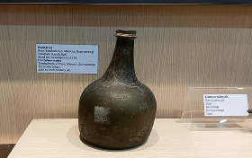Artefak wadah air merupakan benda yang digunakan sejak masa prasejarah hingga sejarah untuk menampung dan menyimpan air. Dibuat dari bahan seperti tanah liat, batu, atau logam, wadah air mencerminkan kebutuhan dasar manusia serta perkembangan teknologi dan kehidupan sehari-hari masyarakat masa lalu.
LAMPU MINYAK
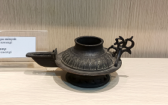Artefak lampu minyak digunakan sejak masa lalu sebagai alat penerangan sebelum dikenal listrik. Terbuat dari tanah liat, logam, atau kaca, lampu ini mencerminkan kebutuhan penerangan serta perkembangan teknologi dan kehidupan sehari-hari masyarakat masa lalu.
SENDOK
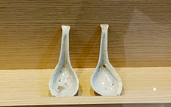Artefak sendok telah digunakan sejak masa lalu sebagai alat makan dan pengambil bahan makanan. Terbuat dari bahan seperti kayu, tulang, logam, atau keramik, sendok mencerminkan perkembangan kebiasaan makan dan teknologi masyarakat pada masanya.
PIRING BELANDA
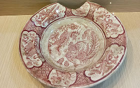Artefak piring Belanda merupakan keramik yang masuk ke Nusantara pada masa kolonial Belanda melalui jalur perdagangan dan administrasi kolonial. Piring ini mencerminkan pengaruh budaya Eropa, perkembangan industri keramik Belanda, serta hubungan ekonomi dan sosial pada masa tersebut.
PIRING DINASTI
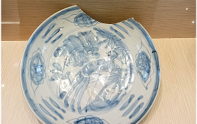Artefak piring dinasti merupakan keramik yang berasal dari masa dinasti-dinasti besar, terutama Cina, dan masuk ke Nusantara melalui jalur perdagangan. Piring ini mencerminkan perkembangan seni keramik, teknologi pembakaran, serta hubungan dagang dan budaya masyarakat masa lalu.
PIRING EROPA
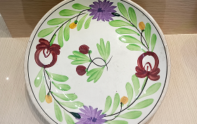Artefak piring Eropa merupakan keramik yang masuk ke Nusantara sejak masa kolonial melalui perdagangan dan pengaruh budaya Barat. Piring ini mencerminkan perkembangan teknologi keramik Eropa serta interaksi budaya dan ekonomi masyarakat masa lalu.
KACIP
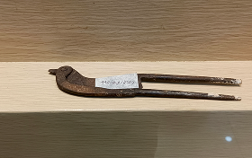Artefak kacip merupakan alat tradisional yang digunakan sejak masa lalu untuk memotong atau menghancurkan bahan, seperti pinang dalam kebiasaan menginang. Terbuat dari logam atau bahan keras lainnya, kacip mencerminkan tradisi budaya dan kebiasaan sosial masyarakat pada masanya.
SELUBUNG TIANG
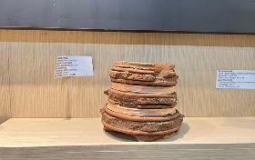selubung tiang merupakan unsur bangunan yang digunakan sejak masa lalu untuk melapisi atau memperkuat tiang, biasanya terbuat dari batu, kayu, atau logam. Artefak ini mencerminkan perkembangan teknologi arsitektur serta fungsi perlindungan dan estetika dalam bangunan tradisional.
GUCI CINA
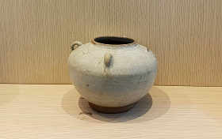Artefak guci Cina merupakan wadah keramik yang berkembang sejak masa dinasti-dinasti Cina dan masuk ke Nusantara melalui jalur perdagangan. Guci ini digunakan untuk menyimpan barang serta memiliki nilai simbolik, mencerminkan kemajuan teknologi keramik dan hubungan dagang masa lalu.
DARPANA

Artefak darpana merupakan cermin tradisional yang dikenal sejak masa Hindu–Buddha dan sering digunakan dalam upacara keagamaan maupun kehidupan sehari-hari. Darpana mencerminkan pengaruh budaya India serta perkembangan seni dan simbolisme spiritual masyarakat masa lalu.
CUNDRIK
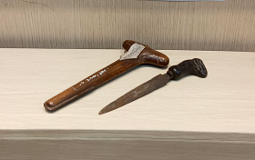Artefak cundrik senjata tikam tradisional yang telah digunakan sejak masa lalu sebagai alat pertahanan diri dan simbol status. Cundrik mencerminkan keterampilan pengolahan logam serta nilai budaya dan sosial masyarakat pada masanya.
CAWAN BERKAKI
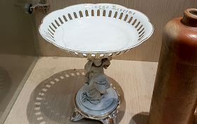Artefak cawan berkaki merupakan wadah yang telah digunakan sejak masa lalu, terutama dalam konteks ritual dan upacara adat. Cawan ini mencerminkan perkembangan seni kerajinan serta fungsi keagamaan dan sosial dalam budaya masyarakat masa lalu.